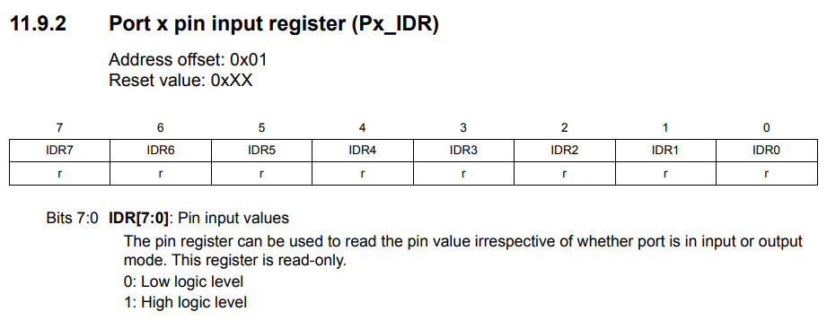
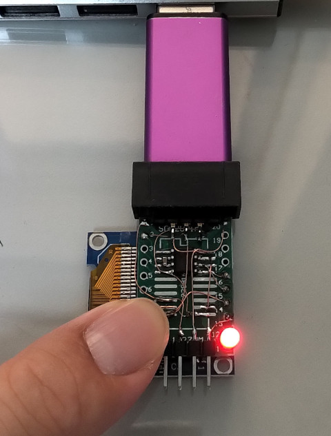

STM8S001 >> Assembly
Button
表格


main.s
.equ pb_odr, 0x5005 .equ pb_idr, 0x5006 .equ pb_ddr, 0x5007 .equ pb_cr1, 0x5008 .equ pb_cr2, 0x5009 .equ pc_odr, 0x500a .equ pc_idr, 0x500b .equ pc_ddr, 0x500c .equ pc_cr1, 0x500d .equ pc_cr2, 0x500e .equ pd_odr, 0x500f .equ pd_idr, 0x5010 .equ pd_ddr, 0x5011 .equ pd_cr1, 0x5012 .equ pd_cr2, 0x5013 .area sseg .area data .area home int main .area cseg main: mov pc_ddr, #0x20 mov pc_cr1, #0x20 mov pd_ddr, #0x00 mov pd_cr1, #0x40 loop: btjf pd_idr, #6, press bset pc_odr, #5 jp loop press: bres pc_odr, #5 jp loop
編譯和燒錄
$ sdasstm8 -plosgff main.s $ sdcc -lstm8 -mstm8 --out-fmt-ihx -Wl-bhome=0x8000 -Wl-bcseg=0x8080 main.rel $ sudo stm8flash -c stlinkv2 -p stm8s001j3 -u $ sudo stm8flash -c stlinkv2 -p stm8s001j3 -w main.ihx
完成

